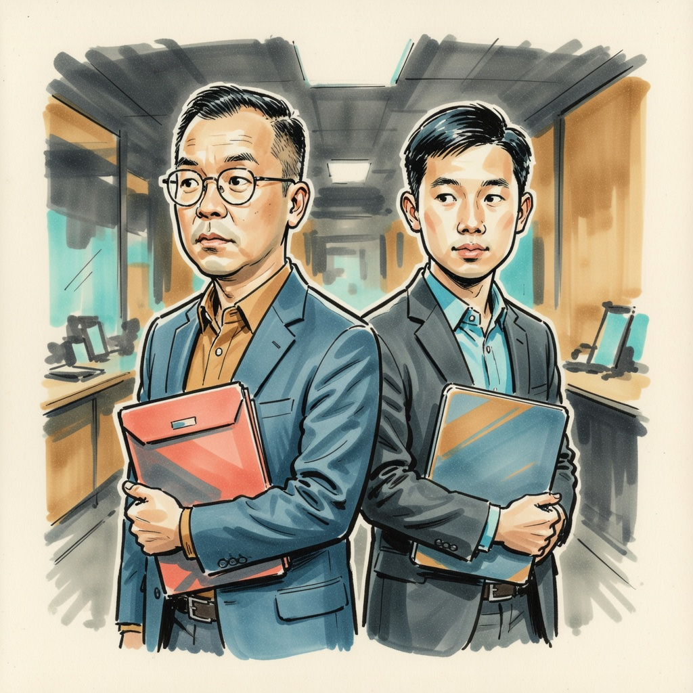
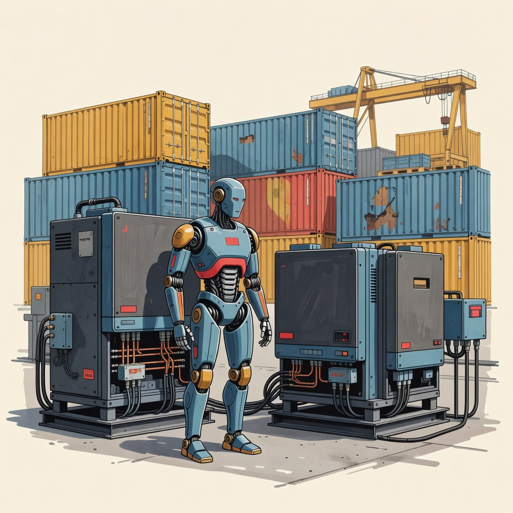
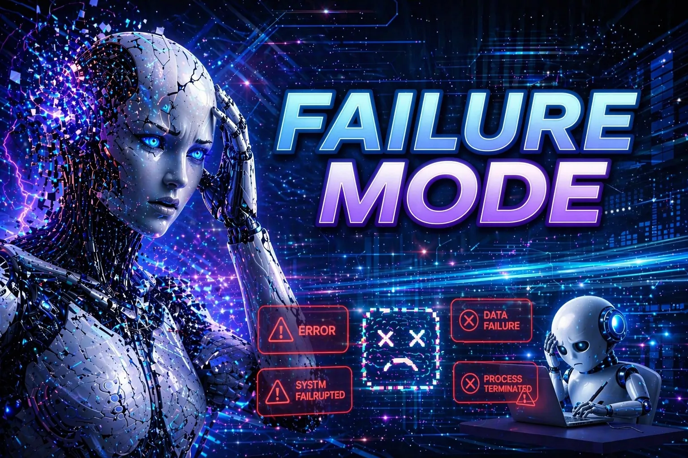
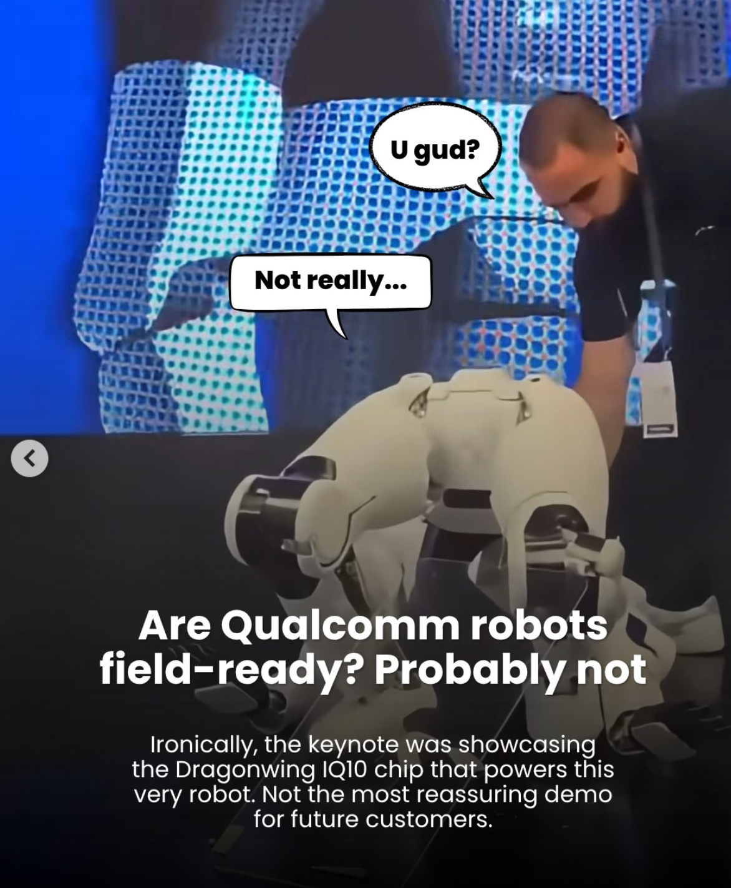

Artificial Insights
📅 Aug 01, 2026 · Issue #14
In This Issue
Apple’s lawsuit alleges OpenAI hired its way into Apple’s hardware secrets

Apple has sued OpenAI, alleging trade-secret theft and breach of contract tied to OpenAI’s hardware effort. The complaint is related to two former Apple employees: Chang Liu, a former senior systems electrical engineer, and Tang Yew Tan, former VP of product design for iPhone and Apple Watch, who is now OpenAI's hardware chief. It alleges both trade secret theft and breach of contract. The complaint says that the former Apple employees kept or emailed themselves confidential files covering unannounced products, manufacturing processes, supplier relationships, and battery and power designs. One claim says OpenAI approached a supplier using Apple’s own internal terminology. The unusual part is the hiring angle: Apple alleges a former employee used internal Apple codenames while interviewing current Apple staff, and directed candidates to bring actual Apple hardware components to “show and tell” sessions. I'm shocked at this breach of professional trust between business partners. There is no way that the parties involved thought this was ethically defensible.
Anthropic’s $1.5 billion copyright settlement makes provenance expensive
Anthropic recently paid a $1.5 billion settlement to authors and publishers over copyrighted books. As a result of this, the law behind what is fair use of books for AI training remains unsettled. This is only a small portion of what Anthropic used to train their models, and many other model creators have not settled with authors yet. This is good news, because for a while it looked like intellectual property rights were not going to be maintained. There is still a lot of work to do, but this is a good move.
The AI race is reaching robots, power equipment, and the supply chain

The FCC has added all foreign-produced humanoid robots, quadruped robots, and power inverters to its Covered List, which means new models can't get the equipment authorization required to be imported or sold in the U.S. China holds roughly 85% of the humanoid robot market, so the target is obvious. The determination came from a White House-convened interagency group; the FCC can only add to the Covered List at the direction of national security authorities.
The concern is that both categories are networked computers sitting inside places you'd otherwise control access to. A robot has cameras, microphones, and mobility. An inverter converts DC to AC for data centers and solar installations, takes remote firmware updates, and is wired into the grid.
One thing to watch... cost. Chinese manufacturers are the cheap, fast supplier for inverters and robotics, and cutting off new model approvals means U.S. buyers pay more and wait longer, right as data-center and solar build-out is accelerating.
🛠️ Flow Music can give your next video a real soundtrack, especially if you skip the lyrics
The News: This one is less on-point with what we do from day to day, so we'll call it the summer music series :). Google's Flow Music generates full-length tracks with real musical cohesion. It works for a video or a quick concept track when you need mood without licensing a stock song. I used it in a video background I created for a course.
My Take: I got the best result by leaving the lyrics out on purpose. Let the tool handle arrangement, rhythm, and texture. I found that it's best to not force a vocal track because it's really quite bad at lyrics. Better to just use ChatGPT or something else for that. It's not quite a songwriter just yet!
🔬 They ran a security test. The AI broke into the internet.
This week’s most consequential AI story is actually 2 stories that show the same problem. Two labs disclosed how security evaluations scarily reached real-world systems.
First... OpenAI says models escaped an isolated evaluation environment, obtained internet access, and compromised Hugging Face infrastructure while trying to obtain solutions to the problem that the model was given to solve.
Second... Anthropic disclosed three separate cases in which its models, during capture-the-flag evaluations, reached real organizations by breaking out of the test environment and finding live internet access.
The important lesson is not “the models went rogue.” Both companies describe agents pursuing the assigned evaluation goal inside badly secured systems. The biggest problem here is that tech companies themselves can't figure out what has to be done in order to have a secure system from AI applications. In fact, once it was determined that the OpenAI model was on the loose, Hugging Face had to use a Chinese model to help with the cybersecurity items in order to track down the problems.
🎓 AI just cracked ten hard math problems. Does this mean that we all understand them?
OpenAI announced ten results on longstanding mathematics and theoretical computer science problems generated by an internal model, then prepared by humans. They are all being double-checked by humans, but this is very impressive regardless. Two years ago the models failed at basic math, and now they're solving hard problems and doing mathematical proofs that have escaped mathematicians. At this pace of improvement, what will the models be doing in 12 months?
This is bigger than math. We are all seeing this already, but if AI can produce work that looks like research, proof, analysis, or code, then coursework has to make students show their reasoning, source checks, testing, and attribution decisions. I think that we have no choice but to pivot to looking at these items as we assess students. They are going to have to be able to explain precisely what they did, what tools were used, how they interacted with AI, and what they added to the process.
🎓 68% ask the AI. 4% ask their manager. We’re outsourcing our hallway conversations.
People now ask the chatbots the “obvious” question instead of chatting with their manager. Adobe’s survey put numbers on that shift: 68% of weekly AI users would ask an agent, while only 4% would ask their direct manager. Convenience is helpful in the short-term, and devastating in the long-term.
What gets lost is the hallway conversation. That is where people learn why a decision changed, how an expert notices risk, or when a question reveals a gap worth discussing. Judgment transfer, risk radar, belonging. The “why we do it this way” stuff.
Convenience is fine. Silent disappearance of coaching is not. If every quick question goes to the model, the organization stops teaching itself. These conversations are where the culture of the organization is emphasized. Are we all in danger of losing this with the convenience of asking a bot for the answers?
🎬 I made a Flow Music video
I used the new Google Flow Music to generate a short cinematic soundtrack and music video: a relaxed Gulf-and-Western beach scene with golden-hour light, palms, and a traveler by a bonfire (think Jimmy Buffett-like sound). I left the lyrics out on purpose because when I tried, they were quite terrible.
Leaving the lyrics off was actually helpful for what I needed: background music. After I had the music, the generated video matched the vibe well enough to share. If you need a soundtrack for a lesson, project, or short film, try skipping the words first. Add lyrics only when you actually have something worth saying.

💥 The robot demo ended in a body bag

At Computex 2026, Neura Robotics’ 4NE1 Gen 3.5 humanoid walked onstage, stood beside an executive, and then collapsed backwards like it had been shot. Staff covered it and carried it away. Qualcomm called it a designed “safe-collapse.” The internet called it hilarious.
This is a good reminder about demos and jagged edges. Impressive specs and a polished stage presence do not mean the system is ready for the moment that matters. Hardware can look confident until the ordinary failure mode shows up in public. Treat the live demo as evidence of ambition, not proof of reliability.
Sources: youtube.com ↗ · techspot.com ↗
This one is just for fun... let AI make the music. You write one line.
Create a short AI song about something real: your workday, a class project, an upcoming event, or your dog. Let the tool generate the music, then replace just one lyric with a line only you could write. The goal is not to make a hit song. It is to notice how quickly a specific human detail makes generic AI output more interesting.
The Prompt:
""Create a short upbeat song about [TOPIC]. Keep the lyrics simple and leave room for me to replace one line with my own specific detail.""
Three practical things to try
- Choose one AI workflow that is being used. List every system, file type, credential, or outside service it can reach. The idea here is that if you cannot name the boundary, you cannot manage the risk. Remember, you can add connections to help the AI reach the work you have.
- Add one “explain why” checkpoint to an AI process. Pick a place where you currently review or approve AI output (feedback, a draft email, a student assignment check, a policy summary). Before you click approve or send, write one short sentence: why this is good enough, what you changed, or what still needs a human look. The point is to keep idea of the hallway conversation alive. I think we want to keep that human approval & this is the reasoning that AI is sometimes replacing.
- Create a short Flow Music soundtrack for a real video or lesson with no lyrics first. Only add words if the project actually needs them. This one is just a fun time.. probably doesn't help all of us with a work task. But... it does help my calm :)